화학분석기사 (2020-09-26 기출문제)
1과목: 화학분석 과정관리
1. 보기의 물질을 물과 사염화탄소로 용해시키려 할 때 물에 더욱 잘 녹을 것이라고 예상되는 물질을 모두 나타낸 것은?
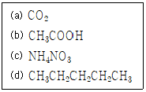
- (a), (b)
- (b), (c)
- (a), (b), (c)
- (b), (c), (d)
(정답률: 77%)

2. 광학 스펙트럼의 설명으로 틀린 것은?
- 연속 스펙트럼은 고체를 백열상태로 가열했을 때 발생한다.
- 분자 흡수는 전자전이, 진동 및 회전에 의해 일어나므로 띠스펙트럼이나 연속스펙트럼을 나타낸다.
- 스펙트럼에는 선스펙트럼, 띠스펙트럼 및 연속 스펙트럼이 있는데 자외선-가시선 영역의 원자 분광법에서는 주로 띠스펙트럼을 이용하여 분석한다.
- 들뜬 입자에서 발생되는 복사선은 보통 방출 스펙트럼에 의해서 특정되며, 이는 방출된 복사선의 상대세기를 파장이나 진동수의 함수로서 나타낸다.
(정답률: 70%)
3. 혼성 궤도함수(hybrid orbital)에 대한 설명으로 틀린 것은?
- 탄소 원자의 한 개의 s 궤도함수와 세 개의 p 궤도함수가 혼성하여 네 개의 새로운 궤도 함수를 형성하는 것을 sp3혼성 궤도함수라 한다.
- sp3혼성 궤도함수를 이루는 메테인은 C-H 결합각이 109.5도인 정사면체 구조이다.
- 벤젠(C6H6)을 분자궤도함수로 나타내면 각 탄소는 sp2혼성 궤도함수를 이루며 평면구조를 나타낸다.
- 사이클로헥세인(C6H12)을 분자궤도함수로 나타내면 각 탄소는 sp 혼성 궤도함수를 이룬다.
(정답률: 71%)
4. 다음 중 기기잡음이 아닌 것은?
- 열적잡음(Johnson noise)
- 산탄잡음(shot noise)
- 습도잡음(humidity noise)
- 깜빡이 잡음(flicker noise)
(정답률: 71%)
5. 다음 중 광학분광법에서 이용하지 않는 현상은?
- 형광
- 흡수
- 발광
- 흡착
(정답률: 75%)
6. 유기화합물의 명칭이 잘못 연결된 것은?
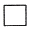
: 사이클로뷰테인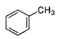
: 톨루엔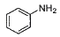
: 아닐린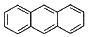
: 페난트렌
(정답률: 78%)
7. 다음 물질을 전해질의 세기가 강한 것부터 약해지는 순서로 나열한 것은?
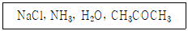
- NaCl ＞ CH3COCH3 ＞ NH3 ＞ H2O
- NaCl ＞ NH3 ＞ H2O ＞ CH3COCH3
- CH3COCH3 ＞ NH3 ＞ NaCl ＞ H2O
- CH3COCH3 ＞ NaCl ＞ NH3 ＞ H2O
(정답률: 65%)
8. 다음 단위체 중 첨가 중합체를 만드는 것은?
- C2H6
- C2H4
- HOCH2CH2OH
- HOCH2CH3
(정답률: 74%)
9. IR spectroscopy로 분석 시 1640 cm-1 근처에서약한 흡수를 보이는 물질의 화학식이 C4H8 일 때 이 물질이 갖는 이성질체수는?
- 2개
- 3개
- 4개
- 5개
(정답률: 51%)
10. 에탄올 50mL를 물 100mL과 혼합한 에탄올 수용액의 질량백분율은? (단, 에탄올의 비중은 0.79 이다.)
- 28.3
- 33.3
- 50.0
- 40.5
(정답률: 64%)
11. X-선 기기를 파장-분산형 기기와 에너지-분산형 기기로 분류할 때 구분기준은?
- 스펙트럼 분해 방법
- 스펙트럼 패턴
- 스펙트럼 영역
- 스펙트럼 구조
(정답률: 64%)
12. 비활성 기체로 채워진 관 안의 두 전극 사이에 발생한 기체 이온과 전자를 이용하는 분광법은?
- 원자 형광 분광법
- 글로우 방전 분광법
- 플라즈마 방출 분광법
- 레이저 유도 파괴 분광법
(정답률: 56%)
13. 어떤 화합물의 질량백분율 성분비를 분석했더니, 탄소 58.5%, 수소 4.1%, 질소 11.4%, 산소 26.0%와 같았다. 이 화합물의 실험식은? (단, 원자량은 C 12, H 1, N 14, O 16이다.)
- C2H5NO2
- C3H7NO2
- C5H5NO2
- C6H5NO2
(정답률: 75%)
14. 다음 중 1차 표준물질이 되기 위한 조건이 아닌 것은?
- 정제하기 쉬워야 한다.
- 흡수, 풍화, 공기 산화 등의 성질이 없어야 한다.
- 반응이 정량적으로 진행되어야 한다.
- 당량 중량이 적어서 측정 오차를 줄일 수 있어야 한다.
(정답률: 74%)
15. 주기율표에 대한 일반적인 설명 중 가장 거리가 먼 것은?
- 1A족 원소를 알칼리금속이라고 한다.
- 2A족 원소를 전이금속이라고 한다.
- 세로열에 있는 원소들이 유사한 성질을 가진다.
- 주기율표는 원자번호가 증가하는 순서로 원소를 배치하는 것이다.
(정답률: 82%)
16. 이온반지름의 크기를 잘못 비교한 것은?
- Mg2+ ＞ Ca2+
- F- ＜ O2-
- Al3+ ＜ Mg2+
- O2-＜ S2-
(정답률: 78%)
17. H2 4g과 N2 10g, O2 40g으로 구성된 혼합가스가 있다. 이 가스가 25℃, 10리터의 용기에 들어 있을 때 용기가 받는 압력(atm)은?
- 7.39
- 8.82
- 89.41
- 213.72
(정답률: 64%)
18. 몰랄농도가 3.24m인 K2SO4 수용액 내 K2SO4의 몰분율은? (단, 원자량은 K 39.10, O 16.00, H 1.008, S 32.06 이다.)
- 0.551
- 0.36
- 0.⑤52
- 0.036
(정답률: 57%)
19. 전자가 보어모델(Bohr Model)의 n=5 궤도에서 n=3 궤도로 전이할 때 수소원자의 방출되는 빛의 파장(nm)은? (단, 뤼드베리 상수는 1.9678 ×10-2 nm-1 이다.)
- 434.5
- 486.1
- 714.6
- 954.6
(정답률: 63%)
20. 다음 화합물 중 octet rule을 만족하지 않는 것은?
- H2O의 O
- CO2의 C
- PCl5의 P
- NO3-의 N
(정답률: 72%)
2과목: 화학물질 특성분석
21. NH4+ 의 Ka= 5.69×10-10일 때 NH3의 염기 해리 상수(Kb)는? (단, Kw= 1.00 × 10-14 이다.)
- 5.69 × 10-7
- 1.76 × 10-7
- 5.69 × 10-5
- 1.76 × 10-5
(정답률: 72%)
22. 전지의 두 전극에서 반응이 자발적으로 진행되려는 경향을 갖고 있어 외부 도체를 통하여 산화전극에서 환원전극으로 전자가 흐르는 전지 즉, 자발적인 화학반응으로부터 전기를 발생시키는 전지는?
- 전해 전지
- 표준 전지
- 자발 전지
- 갈바니 전지
(정답률: 78%)
23. 전기화학 전지에 관한 패러데이의 연구에 대한 설명 중 옳지 않은 것은?
- 전극에서 생성되거나 소모된 물질의 양은 전지를 통해 흐른 전하의 양에 반비례한다.
- 일정한 전하량이 전지를 통하여 흐르게 되면 여러 물질들이 이에 상응하는 당량만큼 전극에서 생성되거나 소모된다.
- 패러데이 법칙은 전기화학 과정에서의 화햑양론을 요약한 것이다.
- 패러데이 상수(F)는 96485.32 C/mol 이다.
(정답률: 77%)
24. 시료 중 칼슘을 정량하기 위해 시료 3.00g을 전처리하여 EDTA로 칼슘을 적정하였더니 15.20mL의 EDTA가 소요되었다. 아연금속 0.50g을 산에 녹인 후 1.00L로 묽혀서 만든 용액 10.00mL로 EDTA를 표정하였고, 이때 EDTA는 12.50mL가 소요되었다. 시료 중 칼슘의 농도(ppm)는? (단, 아연과 칼슘의 원자량은 각각 65.37 g/mol, 40.08 g/mol 이다.)
- 12.426
- 124.26
- 1242.6
- 12426
(정답률: 36%)
25. van Deemter식과 각 항의 의미가 아래와 같을 때, 다음 설명 중 틀린 것은?
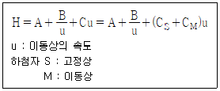
- A는 다중이동 통로에 대한 영향을 말한다.
- B/u는 세로확산에 대한 영향을 말한다.
- Cu 물질이동에 의한 영향을 말한다.
- H는 분리단의 수를 나타내는 항이다.
(정답률: 61%)
26. 산화수에 관한 설명 중 틀린 것은?
- 원소 상태의 원자는 산화수가 0이다.
- 일원자 이온의 원자는 전하와 동일한 산화수를 갖는다.
- 과산화물에서 산소원자는 –1의 산화수를 갖는다.
- C, N, O, Cl과 같은 비금속과 결합할 때 수소는 –1의 산화수를 갖는다.
(정답률: 69%)
27. 불꽃 원자 분광법에서 화학적 방해의 주요요인이 아닌 것은?
- 해리 평형
- 이온화 평형
- 시료 원자의 구조
- 용액 중에 존재하는 다른 양이온
(정답률: 65%)
28. C-Cl 신축진동을 관측하기 위한 적외선 분광분석기의 창(window) 물질로 적합하지 않은 것은?
- KBr
- CaF2
- NaCl
- mineral oil + KBr
(정답률: 52%)
29. ppm과 ppb의 관계가 옳게 표현된 것은?
- 1 ppm = 1000 ppb
- 1 ppm = 10 ppb
- 1 ppm = 1 ppb
- 1 ppm = 0.001 ppb
(정답률: 73%)
30. 0.100 M CH3COOH 용액 50.0mL를 0.⑤00 M NaOH로 적정할 때 가장 적합한 지시약은?
- 메틸 오렌지
- 페놀프탈레인
- 브로모크레졸 그린
- 메틸 레드
(정답률: 72%)
31. 용질의 농도가 0.1M로 모두 동일한 다음 수용액 중 이온 세기(ionic strength)가 가장 큰 것은?
- NaCl(aq)
- Na2SO4(aq)
- Al(NO3)3(aq)
- MgSO4(aq)
(정답률: 71%)
32. 어떤 염의 물에 대한 용해도가 70℃에서 60g, 30℃에서 20g일 때, 다음 설명 중 옳은 것은?
- 70℃에서 포화용액 100g에 녹아 있는 염의 양은 60g 이다.
- 30℃에서 포화용액 100g에 녹아 있는 염의 양은 20g 이다.
- 70℃에서 포화용액 30℃로 식힐 때 불포화용액이 형성된다.
- 70℃에서 포화용액 100g을 30℃로 식힐 때 석출되는 염의양은 25g 이다.
(정답률: 63%)
33. 다음 중 환원제로 사용되는 물질은?
- 과염소산
- 과망간산칼륨
- 포름알데하이드
- 과산화수소
(정답률: 52%)
34. 0.1M 약염기 B 100mL 수용액에 0.1 M HCl 50mL 수용액을 가했을 때의 pH는? (단, Kb= 2.6 × 10-6 이고 Kw = 1.0 × 10-14 이다.)
- 5.59
- 7.00
- 8.41
- 9.18
(정답률: 55%)
35. 원자 흡수 분광법에서 연속광원 바탕보정법에 사용되는 자외선 영역의 연속광원은?
- 중수소등
- 텅스텐등
- 니크롬선등
- 속빈음극등
(정답률: 55%)
36. 다음의 두 평형에서 전하 균형식(charge balance equation)을 옳게 표현한 것은?
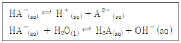
- [H+] = [HA-]+ [A2-]+[OH-]
- [H+] = [HA-]+ 2[A2-]+[OH-]
- [H+] = [HA-]+ 4[A2-]+[OH-]
- [H+] = 2[HA-]+ [A2-]+[OH-]
(정답률: 72%)
37. Cu(s) + 2Fe3+ ⇄ 2Fe2++ Cu2+ 반응의 25℃에서 평형상수는? (단, E°는 25℃에서의 표준 환원 전위이다.)
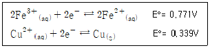
- 1 × 1014
- 2 × 1014
- 3 × 1014
- 4 × 1014
(정답률: 47%)
38. 0.100 M BH22+ 용액 20.0mL를 0.20M NaOH용액으로 적정하는 실험에 대한 설명으로 옳은 것은? (단, BH22+의 산해리 상수 Ka1과 Ka2는 각각 1.00 ×10-4, 1.00 × 10-8 이고 물의 이온화곱상수는 1.00 × 10-14 이다.)
- NaOH(aq) 5.00mL를 가했을 때 용액에는 BH22+와 BH+가 1:1의 몰비로 존재한다.
- NaOH(aq) 10.0mL를 가했을 때 용액의 pH는 5.0 이다.
- NaOH(aq) 15.00mL를 가했을 때 용액에서 B와 BH+가 4:6의 몰수비로 존재한다.
- NaOH(aq) 20.0mL를 가했을 때 용액의 pH를 결정하는 주 화학종은 BH+이다.
(정답률: 40%)
39. 아래와 같은 화학반응식의 평형 이동에 관한 설명 중 틀린 것은?
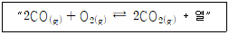
- 반응계를 냉각할 경우 평형은 오른쪽으로 이동한다.
- 반응계에 Ar(g)를 가하면 평형은 왼쪽을 이동한다.
- CO(g)를 첨가할 경우 평형은 오른쪽으로 이동한다.
- O2(g)를 제거할 경우 평형은 왼쪽으로 이동한다.
(정답률: 68%)
40. 이양성자성 산(BH22+)의 산 해리 상수가 각각 pKa1 = 4, pK2a = 9일 때 [BH+] = [BH22+]를 만족하는 pH는?
- 4
- 5
- 6.5
- 9
(정답률: 41%)
3과목: 화학물질 구조분석
41. 열무게분석법(ThermoGravimetric Analysis; TGA)에서 전기로를 질소와 아르곤으로 분위기를 만드는 주된 이유는?
- 시료의 환원 억제
- 시료의 산화 억제
- 시료의 확산 억제
- 시료의 산란 억제
(정답률: 75%)
42. Naclear Magnetic Resonance(NMR)의 화학적 이동에 영향을 미치는 인자가 아닌 것은?
- 혼성 효과(Hybridization effect)
- 도플러 효과(Doppler effect)
- 수소결합 효과(Hydrogen bond effect)
- 전기음성도 효과(Electronegativity effect)
(정답률: 68%)
43. 기체-고체 크로마토그래피(GSC)에 대한 설명으로 틀린 것은?
- 고체표면에 기체물질이 흡착되는 현상을 이용한다.
- 분포상수는 보통 GLC의 경우 보다 적다.
- 기체-액체 컬럼에 머물지 않는 화학종을 분리하는데 유용하다.
- 충전 컬럼과 열린관 컬럼 두 가지 모두 사용된다.
(정답률: 65%)
44. 폭이 매우 좁은 KBr셀 만을 적외선 분광기에 걸고 적외선 스펙트럼을 얻었다. 시료가 없기 때문에 적외선 흡수 밴드는 보이지 않고, 그림과 같이 파도 모양의 간섭파를 스펙트럼에 얻었다. 이 셀의 폭(mm)으로 가장 알맞은 것은?
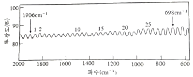
- 0.1242
- 12.42
- 24.82
- 248.4
(정답률: 26%)
45. 질량분석기에서 분석을 위해서는 분석물이 이온화되어야 한다. 이온화 방법은 분석물의 화학결합이 끊어지는 Hard Ionization 방법과 화학결합이 그대로 있는 Soft Ionization 방법이 있다. 다음 중 가장 Hard Ionization에 가까운 것은?
- 전자 충돌 이온화(Electron Impact Ionization)
- 전기 분무 이온화(ESI, Electrospray Ionization)
- 메트릭스 보조 레이저 탈착 이온화(MALDI, Matrix Assisted Laser Desorption Ionization)
- 화학 이온화(CI, Chemical Ionization)
(정답률: 62%)
46. 적외선 흡수분광기의 검출기로 사용할 수 있는 열검출기(thermal detector)가 아닌 것은?
- 열전기쌍(thermocouple)
- 써미스터(thermistor)
- 볼로미터(bolometer)
- 다이오드 어레이(doode array)
(정답률: 50%)
47. 카드뮴 전극이 0.010M Cd2+ 용액에 담가진 반쪽전지의 전위(V)는? (단, 온도는 25℃이고 Cd2+/Cd의 표준환원전위는 –0.403 V 이다.)
- -0.40
- -0.46
- -0.50
- -0.56
(정답률: 61%)
48. 전기화학분석에 관한 설명에서 올바른 것은?
- 전지화학 전지의 전위는 환원반응이 일어나는 환원전극의 전극전위에서 산화반응이 일어나는 산화전극의 전극전위를 빼주어 계산한다.
- IUPAC 규약에 의해서 전극전위를 산화반응에 대한 것은 산화전극전위라고 하고 환원반응에 대한 것은 환원전극전위로 나타내어 사용하기로 한다.
- 각 산화-환원 반응에 대한 전극전위는 0℃에서 표준수소전극전위를 0V로 놓고 이에 대한 상대적인 산화-환원력의 척도로 나타낸 것이다.
- 형식전위(formal potential)는 활성도 효과와 부반응으로부터 오는 오차를 보상하기 위하여 반응용액에 존재하는 성분들의 농도가 1F(포말 농도)에서의 표준전위를 말한다.
(정답률: 52%)
49. 폴라로그래피에서 펄스법의 감도가 직류법보다 좋은 이유는?
- 펄스법에서는 페러데이 전류와 충전전류의 차이가클 때 전류를 측정하기 때문
- 펄스법은 빠른 속도로 측정하기 때문
- 직류법에서는 빠르게 펄스법에서는 느리게 전압을 주사하기 때문
- 펄스법에서는 비페러데이 전류가 최대이기 때문
(정답률: 50%)
50. 열무게분석법(ThermoGravimetric Analysis; TGA)으로 얻을 수 있는 정보가 아닌 것은?
- 분해반응
- 산화반응
- 기화 및 승화
- 고분자 분자량
(정답률: 47%)
51. 시차주사열량법(Diggerential Scanning Calorimetry; DSC)에 대한 설명 중 틀린 것은?
- 온도변화에 따른 무게변화를 측정
- 시료물질과 기준물질의 열량차이를 시료온도 함수로 측정
- 열흐름 DSC는 열흐름의 차이를 온도를 직선적으로 증가하면서 측정
- 전력보상 DSC는 시료물질과 기준물질을 두 개의 다른 가열기로 가열
(정답률: 59%)
52. 자기장분석 질량분석기(Magenetic sector analyzer) 중 이중 초점 분석기에 대한 설명으로 틀린 것은?
- 이온다발의 방향과 에너지의 벗어나는 정도를 모두 최소화하기 위해 고안된 장치이다.
- 두 개의 sector 중 하나는 정전기적 sector이고, 다른 하나는 자기적 sector이다.
- 정전기적 sector는 전기장을 걸어주어 질량 대 전하비를 분리하고, 자기적 sector는 자기장을 걸어주어 운동에너지분포를 좁은 범위로 제한한다.
- 이론적으로 질량을 변화시켜 스캐닝하는 방법은 자기장, 가속전압 및 sector의 곡률반경을 변경하는 것이다.
(정답률: 52%)
53. 원자 및 분자 질량(atomic & molecular mass)에 대한 설명으로 틀린 것은?
- 원소들의 원자 질량은 탄소-12의 질량을 12 amu 또는 Dalton으로 놓고 그것에 대한 상대 질량을 의미한다.
- 원자량은 자연에 존재하는 동위원소의 존재비와 질량으로 해서 평균한 질량을 말한다.
- 화학식량은 자연에 가장 많이 존재하는 대표적인 동위원소의 질량을 화학식에 나타난 모든 원소의 합으로 나타낸 것이다.
- 동위원소는 원자번호는 같으나 질량이 다른 원소를 의미하며 화학적 성질은 같다.
(정답률: 60%)
54. 시차주사열량법(Differential Scanning Calorimetry; DSC)은 전이엔탈피와 온도 혹은 반응열을 측정할 수 있으므로 아주 유용하다. 다음 중 DSC의 응용 분야로서 가장 거리가 먼 것은?
- 상전이과정 측정
- 결정화온도 측정
- 고분자물 경화여부 측정
- 휘발성 유기성분 분석
(정답률: 64%)
55. Nuclear Magnetic Resonance(NMR)에서 이용하는 파장은?
- 적외선(infrared)
- 자외선(ultraviolet)
- 라디오파(radio wave)
- 마이크로웨이브(microwave)
(정답률: 67%)
56. Gas Chromatograp(GC) 검출기 중 할로겐 원소에 대한 선택성이 큰 검출기는?
- 전자포착검출기(ECD, Electron Capture Detector)
- 열전도검출기(TCD, Thermal Conductivity Detector)
- 불꽃이온화 검출기(FID, Flame Ionization Detector)
- 열이온검출기(TID, Thermionic Detector)
(정답률: 66%)
57. 얇은층 크로마토그래피(TLC)의 일반적인 용도가 아닌 것은?
- 혼합물 중에 포함된 성분의 수를 결정
- 화학반응 중에 생성되는 중간체 확인
- 혼합물의 화학결합 존재여부 확인
- 화합물의 순도 확인
(정답률: 44%)
58. 아주 큰 분자량을 갖는 극성 생화학 고분자의 분자량에 대한 정보를 알 수 있는 가장 유용한 이온화법은?
- 장 이온화(FI, Field Ionization)
- 화학 이온화(CI, Chemical Ionization)
- 전자 충돌 이온화(Electron Impact Ionization)
- 메트릭스 보조 레어저 탈착 이온화(MALDI, Matrix Assisted Laser Desorption Ionization)
(정답률: 61%)
59. 니켈(Ni2+)과 카드뮴(Cd2+)이 각각 0.1M인 혼합용액에서 니켈만 전기화학적으로 석출하고자 한다. 카드뮴이온은 석출되지 않고, 니켈이온이 0.01%만 남도록 하는 전압(V)은?
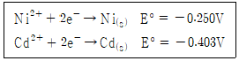
- -0.2
- -0.3
- -0.4
- -0.5
(정답률: 30%)
60. TLC에서 Rf값을 구하는 식은?
- 분석물의 이동거리 ÷ 용매의 최대 이동거리
- 분석물의 이동거리 ÷ 표준물질의 최대 이동거리
- 용매의 최대 이동거리 ÷ 분석물의 이동거리
- 표준물질의 최대 이동거리 ÷ 분석물의 이동거리
(정답률: 69%)
4과목: 시험법 밸리데이션
61. 분석기기의 성능점검주기를 선정할 때 고려할 사항을 보기에서 모두 나열한 것은?
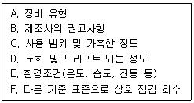
- A, B
- A, C, D
- A, B, C, E
- A, B, C, D, E ,F
(정답률: 70%)
62. 시험법이 정밀성, 정확성, 직선성이 적절한 수준임을 밝혀진 상태에서 검체 내 시험 대상물의양 또는 농도의 상한 및 하한 농도사이의 구간을 범위(Range)라고 정의한다. 다음 중 최소로 규정하는 범위로 틀린 것은?
- 원료 의약품의 정량시험 : 시험 농도의 80 ~ 120%
- 완제 의약품의 정량시험 : 시험 농도의 90 ~ 110%
- 함량 균일성 시험 : 시험 농도의 70 ~ 130%
- 용출시험 : 용출시험기준 범위의 ±20%
(정답률: 57%)
63. 생체시료효과에 대한 설명 중 틀린 것은?
- 생체시료효과란 생체시료 내의 물질이 직접 또는 간접적으로 분석물질 또는 내부표준물질의 반응에 미치는 영향을 말한다.
- 생체시료효과를 분석하기 위해서는 6개의 서로 다른 생체시료를 가지고 분석하나, 구하기 힘든 생체시료의 경우 6개 보다 적은 수를 사용할 수 있다.
- 생체시료효과상수를 계산하기 위한 실험데이터를 활용하기 위해서는 품질관리시료의 농도값의 변동계수가 20%이내이어야 한다.
- 생체시료효과상수는 생체시료의 유무에 따른 분석결과의 비율로서 계산한다.
(정답률: 60%)
64. 일반적으로 전처리과정에서 대상성분의 함량이 낮은 경우 더욱 고려해야 하는 검체의 특성은?
- 안정성
- 균질성
- 흡습성
- 용해도
(정답률: 64%)
65. 시료분석 시의 정도관리 요소 중 바탕값(black)의 종류와 내용이 옳게 연결된 것은?
- 현장바탕시료(field black sample)는 시료채취 과정에서 시료와 동일한 채취과정의 조작을 수행하는 시료를 말한다.
- 운송바탕시료(trip balck sample)는 시험 수행과정에서 사용하는 시약과 정제수의 오염과 실험절차의 오염, 이상 유무를 확인하기 위한 목적에 사용한다.
- 정제수 바탕시료(reagent black sample)는 시료채취과정의 오염과 채취용기의 오염 등 현장 이상유무를 확인하기 위함이다.
- 시험바탕시료(method blanks)는 시약 조제, 시료 희석, 세척 등에 사용하는 시료를 말한다.
(정답률: 45%)
66. 수용액의 pH 측정에 관한 설명으로 틀린 것은?
- 전극이 필요하다.
- 광원이 필요하다.
- 표준 완충 용액이 필요하다.
- 수용액의 수소 이온 농도를 측정한다.
(정답률: 72%)
67. 분석결과의 정밀성과 가장 밀접한 것은?
- 검출한계
- 특이성
- 변동계수
- 직선성
(정답률: 63%)
68. 불꽃원자화기의 소모품 중 네뷸라이저(nebulizer)의 역할로 옳은 것은?
- 역화 방지
- 연소 기체 혼합
- 에어로솔 생성
- 연소로 인해 생성된 수분 제거
(정답률: 66%)
69. 표준 편차에 대해 올바르게 설명한 것은?
- 표준 편차가 작을수록 정밀도가 더 크다.
- 표준 편차가 클수록 정밀도가 더 크다.
- 표준 편차와 정밀도는 상호 관계가 없다.
- 표준 편차는 정확도와 가장 큰 상호 관계를 갖는다.
(정답률: 75%)
70. 화학 분석의 일반적 단계를 설명한 내용 중 틀린 것은?
- 시료 채취는 분석할 대표 물질을 선택하는 과정이다.
- 시료 준비는 대표 시료를 녹여 화학 분석에 적합한 시료로 바꾸는 과정이다.
- 분석은 분취량에 들어 있는 분석물질의 농도를 측정하는 과정이다.
- 보고와 해석은 대략적으로 작성하고, 결론도출에서 명료하고 완전하며 책임질 수 있는 자료를 작성한다.
(정답률: 74%)
71. 유효숫자를 고려하여 아래를 계산할 때, 얻어지는 값은?
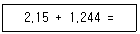
- 3
- 3.4
- 3.39
- 3.394
(정답률: 70%)
72. 분석업무지시서에서 확인 가능한 검체 처리과정으로 틀린 것은?
- 검체 검증 분석의 시기 : 검체의 안정성이 확보된 기간 내에서 최초 분석과 같은 날, 서로 다른 배치에서 실시
- 검체 검증 분석의 검체 수 : 전체 검체 수가 1000개 이하인 경우, 검체 검증 분석은 검체 수의 10%에 해당하는 수 만큼 검체를 선정
- 검체 검증 분석의 검체 수 : 전체 검체 수가 1000개 초과인 경우, 1000개의 10%에 해당하는 수와 1000개를 제외한 나머지의 5%에 해당하는 수만큼 검체를 선정
- 검체 검증 분석의 판정 기준 편차(%) :
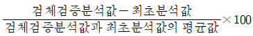
(정답률: 49%)
73. 투과율 눈금 교정 시 인증표준물질을 이용하여 6회 반복 측정한 실험결과 값으로부터 우연불확정도와 전체불확정도를 구하여 측정값으로 옳게 표시한 것은? (단, 평균값 ≒ 18.32%, 표준편차 = 0.011%, 인증표준물질의 불확도 = 0.1%, t값 = 2.65 이다.)
- 18.32% ± 0.1%
- 18.32% ± 0.2%
- 18.32% ± 0.3%
- 18.32% ± 0.4%
(정답률: 46%)
74. Linearity시험 결과 도표의 해석으로 틀린 것은? (단, 기준 농도는 L3로 한다.)
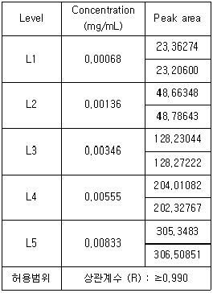
- Linearity 결과 합격이다.
- 농도범위는 분석 농도의 20 ~ 240% 이다.
- 농도와 area에 대한 linear regression을 실시하여 Y=36598.7X-1.0의 형태로 직선식을 구할 수 있다.
- 위 시험결과를 최소자승법에 의한 희귀선의 계산을 통해 평가했을 때, R값은 0.999이다.
(정답률: 50%)
75. 분석물질의 직선성을 시험한 결과 도표를 완성할 때, 값이 틀린 것은? (단, 농도 범위는 분석농도의 80~120% 이다.)
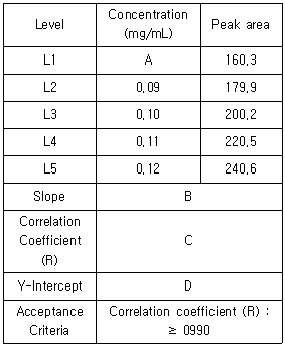
- A : 0.08
- B : 2012
- C : 0.9999
- D : 0.9
(정답률: 47%)
76. 약전에 수재(收載)되어있는 분석법의 정밀성 평가 항목이 아닌 것은?
- 반복성
- 직선성
- 실내재현성
- 실간재현성
(정답률: 53%)
77. 최저 정량 한계에서 추출한 시료의 신호 대 잡음비를 계산한 값을 무엇이라 하는가?
- 정확성
- 회수율
- 감도
- 정밀성
(정답률: 68%)
78. 대한민국약전 의거한 근적외부스펙트럼측정법 분광분석기의 적격성 평가에 대한 설명 중 틀린 것은?
- 수행적격성 평가란 분석장비가 지속적으로 작동되는지 확인하는 것을 의미한다.
- 수행적격성 평가는 최소 6개월에 한번씩 실시한다.
- 설치적격성 평가 시 하드웨어 일련번호, 소프트웨어의 버전 등을 기록하는 작업이 포함된다.
- 설치적격성 평가는 장치의 설치 환경에 의한 기기의 정확성과 재현성을 검증하는 것을 의미한다.
(정답률: 40%)
79. 평균값과 표준편차를 얻기 위한 시험으로 계통오차를 제거하지 못하는 시험법은?
- 공시험
- 조절시험
- 맹시험
- 평행시험
(정답률: 55%)
80. ICH에서 공지한 대표적인 밸리데이션 항목에 포함되지 않는 것은?
- 재현성
- 특이성
- 직선성
- 정량한계
(정답률: 40%)
5과목: 환경·안전관리
81. 분말소화기의 종류와 소화약제의 연결로 틀린 것은?
- 제1종 - 탄산수소나트륨
- 제2종 - 탄산수소칼륨
- 제3종 - 제1인산암모늄
- 제4종 – 요소와 탄산수소나트륨
(정답률: 65%)
82. 다음의 유해화학물질의 건강유해성의 표시 그림문자가 나타내지 않는 사항은?
- 호흡기 과민성
- 발암성
- 생식독성
- 급성독성
(정답률: 57%)
83. GHS 그림문자 표기 물질에 해당하는 것은?
- 산화성 물질
- 급성 독성 물질
- 물반응성 물질
- 호흡기 과민성 물질
(정답률: 62%)
84. 실험실에서 화재가 발생한 경우 적절한 조치가 아닌 것으로만 묶인 것은?
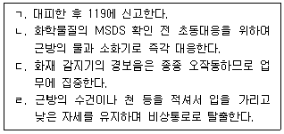
- ㄱ, ㄴ
- ㄴ, ㄷ
- ㄷ, ㄹ
- ㄱ, ㄹ
(정답률: 67%)
85. 위험물에 대한 소화방법으로 옳지 않은 것은?
- 염소산나트륨과 같은 제1류 위험물의 경우 물을 주수하는 냉각소화가 효과적이다.
- 제2류 위험물인 금속분, 철분, 마그네슘, 적린, 유황은 물에 의한 냉각소화가 적당하다.
- 제3류 위험물 중 황린은 물을 주수하는 소화가 가능하다.
- 제4류 위험물은 일반적으로 질식소화가 적합하다.
(정답률: 63%)
86. 가연성 물질이 연소되기 위한 조건으로 가장 거리가 먼 것은?
- 산소와 반응해야 한다.
- 연소반응이 지속되기 위해서 산화반응이 발열반응이어야 한다.
- 열전도율이 커야 한다.
- 연소반응이 지속되기 위해 반응열이 충분히 방출되어야 한다.
(정답률: 64%)
87. 물질안전보건자료의 작성 원칙이 아닌 것은?
- 한글로 작성하는 것을 원칙으로 하며, 외국 기관명 등 고유명사는 영어로 표기한다.
- 여러 형태의 자료를 활용하여 작성 시 제공되는 자료의 출처를 모두 기재할 필요가 없다.
- 외국어로 작성된 MSDS를 번역하고자 하는 경우에는 자료의 신뢰성이 확보될 수 있도록 최초의 작성 기관명 및 시기를 함께 기재한다.
- 함유량의 ±5% 범위 내에서 함유량의 범위로 함유량을 대신하여 표시할 수 있다.
(정답률: 75%)
88. 폐기물관리법령에 따라 “사업장폐기물배출자”가 폐기물처리를 스스로 처리하지 않고 폐기물처리업자등에게 위탁할 때 그 위탁을 받은 자로부터 수탁처리능력확인서를 제출받아야 하는 경우는?(오류 신고가 접수된 문제입니다. 반드시 정답과 해설을 확인하시기 바랍니다.)
- 지정폐기물인 오니를 월 평균 500kg 배출하는 경우
- 지정폐기물이 아닌 오니를 월 평균 500kg 배출하는 경우
- 지정폐기물인 폐유기용제를 월 평균 100kg 배출하는 경우
- 지정폐기물인 폐유독물질을 배출하는 경우
(정답률: 39%)
89. ㉠과 ㉡의 설명을 모두 만족하는 화학반응은?
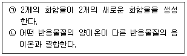
- 화합반응
- 산화환원반응
- 이중 치환반응
- 분해반응
(정답률: 66%)
90. 화학물질관리법령에 따라 검사 결과 취급시설의 구조물이 균열·부식 등으로 안정상의 위해가 우려된다고 인정되는 경우 검사 결과를 받은 날로부터 며칠 이내에 특별안전진단을 받아야 하는가?
- 10일
- 15일
- 20일
- 30일
(정답률: 46%)
91. 분자량이 70.9인 상온에서 황록색을 띠는 기체의 NFPA 건강위험성 코드 등급은?
- 1등급
- 2등급
- 3등급
- 4등급
(정답률: 36%)
92. 실험실에서 활용되는 다양한 화학 물질에 대한 설명으로 틀린 것은?
- 실험실 청소에 활용되는 표백제는 하이포염소산나트륨(NaClO) 성분으로 구성되어 있으며, 암모니아와 섞으면 독가스가 형성되어 취급에 주의를 요한다.
- 불산은 이온화 반응에서 약간만 이온화되는 약산으로 인체 위험도가 낮은 화학물질이다.
- 염산은 이온화 반응에서 거의 100% 이온화되므로 강산이다.
- 아세트산은 이온화 과정에서 1% 정도만 이온화되므로 약산이다.
(정답률: 73%)
93. 환경유해인자에 노출되는 기준에 대한 설명 중 틀린 것은?
- 소음기준은 1일 동안 노출시간이 길어지거나 노출회수가 많아질수록 소음강도수준(dB(A))은 커진다.
- 시간가중평균노출기준(TWA)은 1일 8시간 작업을 기준으로 한다.
- 단시간 노출 기준(STEL)의 단시간이란 1회에 15분간 유해인자에 노출되는 것을 기준으로 한다.
- 최고 노출 기준(C)은 1일 작업 시간 동안 잠시라도 노출되어서는 아니 되는 기준을 말한다.
(정답률: 57%)
94. 위험물안전관리법령에 따른 위험물취급소의 종류에 해당하지 않는 것은?
- 이동취급소
- 판매취급소
- 일반취급소
- 이송취급소
(정답률: 53%)
95. 실험실 폐액 처리 시 주의사항으로 틀린 것은?
- 원액 폐기 시 용기 변형이 우려되므로 별도로 희석 처리 후 폐기한다.
- 화기 및 열원에 안전한 지정 보관 장소를 정하고, 다른 장소로의 이동을 금지한다.
- 직사광선을 피하고 통풍이 잘되는 곳에 보관하고, 복도 및 계단 등에 방치를 금한다.
- 폐액통을 밀봉할 때에는 폐액을 혼합하여 용기를 가득 채운 후 압축 밀봉한다.
(정답률: 74%)
96. 화학 물질을 취급할 때 주의해야 할 사항으로 적절한 것은?
- 모든 용기에는 약품의 명칭을 기재하는 것이 원칙이나 증류수처럼 무해한 약품은 기재하지 않는다.
- 사용할 물질의 성상, 특히 화재·폭발·중독의 위험성을 잘 조사한 후가 아니라면 위험한 물질을 취급해서는 안 된다.
- 모든 약품의 맛 또는 냄새 맡는 행위를 절대로 금하고, 입으로 피펫을 빨아서 정확도를 높인다.
- 약품의 용기에 그 명칭을 표기하는 것은 사용자가 약품의 사용을 빨리 하게 하려는 목적이 전부다.
(정답률: 67%)
97. 대기오염방지시설 중 오염물질이 통과하는 관로(덕트)에 1.225 kg/m3의 밀도를 갖는 공기가 20m/s 의 속도로 통과할 때 동압(mmH2O)은?
- 15
- 20
- 25
- 30
(정답률: 46%)
98. 실험실 환경에 대한 설명으로 틀린 것은?
- 환기 장치 가동 시 실험자가 소음으로 지장을 받지 않도록 가능한 한 60dB이하가 되도록 해야 한다.
- 분석용 가스 저장능력은 가스의 종류와 무관하게 저장분의 1.0배 이하로 하여야 한다.
- 분석실 내 배수관의 재질은 가능한 한 산성이나 알칼리성 물질에 잘 부식되지 않는 재질을 선택하여야 한다.
- 기기 분석실에 안정적인 전원을 공급할 수 있도록 무정전 전원 장치(UPS) 또는 전압 조정 장치(AVR)를 설치해야 한다.
(정답률: 59%)
99. 실험복 및 개인보호구 착의 순서로 옳은 것은?
- 긴 소매 실험복 → 마스크 → 보안면 → 실험장갑
- 긴 소매 실험복 → 보안면 → 실험장갑 → 마스크
- 마스크 → 긴 소매 실험복 → 보안면 → 실험장갑
- 실험장갑 → 긴 소매 실험복 → 마스크 → 보안면
(정답률: 66%)
100. 다음 중 아세틸렌의 수소 첨가 반응에 해당하는 것은?
- C2H2(g) + H2(g) → C2H4(g)
- C2H4(g) + H2(g) → C2H6(g)
- 2C2H2(g) + 5O2(g) → 4CO2(g) + 2H2O(L)
- CaC2(s) + 2H2O(L) → C2H2(g) + Ca(OH)2(aq)
(정답률: 59%)